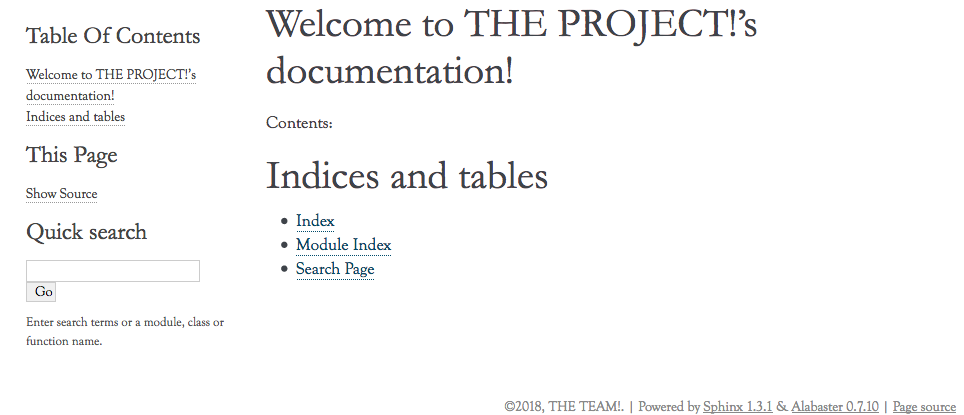

Abaixo do texto, p.ex.
Título
######
O caracter define o nível do tíulo. Depois de
#, vem *, =,
-, ^ e
".
Um *asterísco* para itálico.
Dois **asteríscos** para negrito.
Duas ``crases`` para código.
* no começo da linha para bullets.
* Listas podem ter
mais de uma linha.Um número ou # seguido de ponto para uma lista numerada.
1. Item 1.
2. Item 2.Para sublistas, basta identar.
* Item 1
* Item 1.1
* Item 1.2
* Item 2E ainda:
Certifique-se que Sphinx está instalado no virtualenv ativo.
É bobo falar isso, mas é que ele não surge do nada.
Primeira vez? sphinx-quickstart docs
Responda o wizard.
Importante:
> autodoc: automatically insert docstrings from modules (y/n) [n]: y
(Se você esqueceu disso, é possível editar o arquivo de configuração depois.)
|-- Makefile
|-- build
`-- source
|-- _static
|-- _templates
|-- conf.py
`-- index.rstWelcome to THE PROJECT!'s documentation!
========================================
Contents:
.. toctree::
:maxdepth: 2
Indices and tables
==================
* :ref:`genindex`
* :ref:`modindex`
* :ref:`search`
make html

About the project
#################
*PROJECT!* is a **SUPER AWESOME** project.
Believe us!
make html
checking consistency... /private/tmp/docs/source/about.rst:: WARNING: document isn't included in any toctree
Contents:
.. toctree::
:maxdepth: 2
aboutLembra do
> autodoc: automatically insert docstrings from modules (y/n) [n]: y
?
source.py
#!/usr/bin/env python
# -*- encoding: utf-8 -*-
"""This is a SUPER MODULE of the PROJECT! project."""
def awesome():
"""AWESOME function."""
return 'AWESOME!'THE SOURCE
##########
.. autofunction:: source.awesomesource/conf.py <- configuração do Sphinx
# If extensions (or modules to document with autodoc) are in another directory,
# add these directories to sys.path here. If the directory is relative to the
# documentation root, use os.path.abspath to make it absolute, like shown here.
sys.path.insert(0, os.path.abspath('../../src'))IMPORTANTE!
É relativo ao conf.py, não do diretório do make.
source.py
def cool(name, awesomeness_level=100):
"""Just a cool function.
:param str name: The cool person name.
:param awesomeness_level: Their awesomeness level.
:type awesomeness_level: int or None
:return: A message for the cool person.
:rtype: str
:raises ValueError: if the awesomeness level is over 9000.
:note: For true awesomeness, check :py:func:`source.awesome`.
"""
return '{name} is just cool, not awesome'.format(name=name)source/source.rst
THE SOURCE
##########
.. autofunction:: source.awesome
.. autofunction:: source.cool... peraí...
Cadê a documentação do módulo?
source/source.rst
THE SOURCE
##########
.. .. autofunction:: source.awesome
.. .. autofunction:: source.cool
Ok, now you'll see **THE SOURCE**! It's the most freaking *awesome* source in
the whole planet!
Try no to piss in your pants.
.. automodule:: source
:members:autoclass: documentação da classe inteira.:members:: contém a lista de membros a serem listados, none = tudo.:undoc-members:: usado com :members:, remove itens individuais da lista.